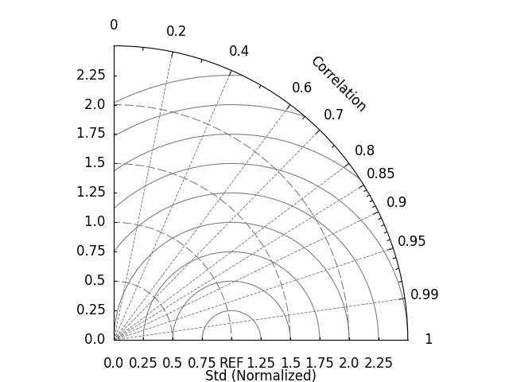
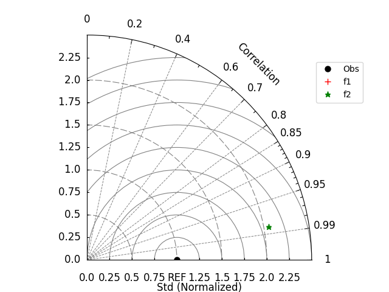
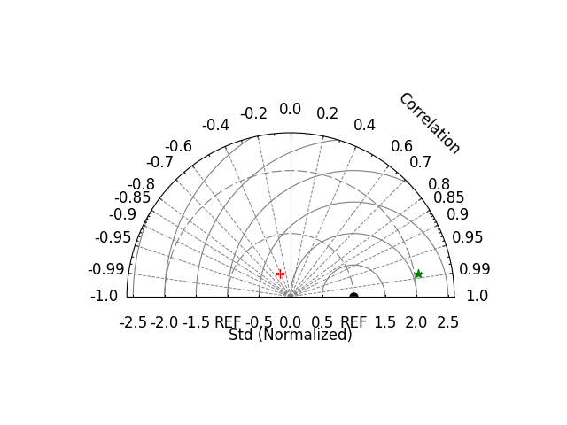
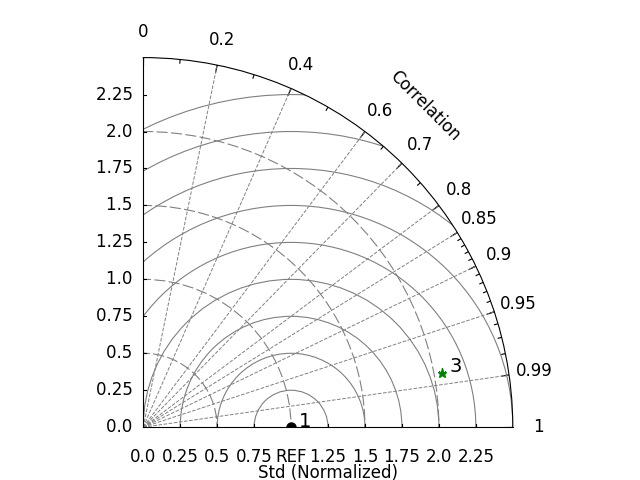
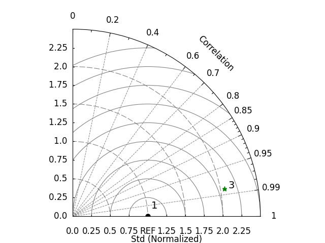

Note
Go to the end to download the full example code.
Taylor Diagram#
The Taylor Diagram is a graphical tool introduced by American meteorologist Karl E. Taylor in 2001 to assess the performance of models. It provides an intuitive way to compare how well model simulations match observed data and to compare the performance of different models.
The basic structure of the Taylor Diagram includes radial and tangential coordinates. In the chart, the standard deviation of observed data is placed at the center, while the standard deviation of model simulations extends radially outward. Additionally, the correlation coefficient, which measures the strength and direction of the linear relationship between two sets of data, is represented along the tangential axis. This chart allows for a visual comparison of the dispersion, shape, and correlation with observed data.
The advantages of the Taylor Diagram in research, particularly in comparing climate model simulation performance, are as follows:
Intuitiveness: The Taylor Diagram presents the similarity between model simulations and observed data in an intuitive way, making it easy for researchers, including non-experts, to quickly understand model performance.
Comprehensive Comparison: The Taylor Diagram allows for the simultaneous comparison of model simulations with observed data and the performance of multiple models. This aids in identifying the most accurate models.
Comprehensive Assessment: By combining key statistical measures such as standard deviation and correlation coefficient, the Taylor Diagram offers a comprehensive evaluation of model performance, considering multiple aspects rather than focusing on a single parameter.
Wide Applicability: The Taylor Diagram is not limited to climate model performance; it can be applied to evaluate models in various fields such as meteorology, oceanography, and environmental science.
The Taylor Diagram, as a graphical tool, provides a clear and comprehensive way for researchers, including those without a specialized background, to assess model performance. It is particularly useful for comparing multiple models and complex datasets in research.
See also
Taylor, K. E. (2001), Summarizing multiple aspects of model performance in a single diagram, J. Geophys. Res., 106(D7), 7183–7192, doi: https://doi.org/10.1029/2000JD900719.
Before proceeding with all the steps, first import some necessary libraries and packages
import easyclimate as ecl
import xarray as xr
import numpy as np
import matplotlib.pyplot as plt
import pandas as pd
Assuming the simulation results of model ‘a’ are as follows
da_a = xr.DataArray(
np.array([[1, 2, 3], [0.1, 0.2, 0.3], [3.2, 0.6, 1.8]]),
dims=("lat", "time"),
coords={
"lat": np.array([-30, 0, 30]),
"time": pd.date_range("2000-01-01", freq="D", periods=3),
},
)
da_a
At the same time, we also assume that model ‘b’ has the following simulation results
da_b = xr.DataArray(
np.array([[0.2, 0.4, 0.6], [15, 10, 5], [3.2, 0.6, 1.8]]),
dims=("lat", "time"),
coords={
"lat": np.array([-30, 0, 30]),
"time": pd.date_range("2000-01-01", freq="D", periods=3),
},
)
da_b
Observational (real) data should be directly obtained from instruments or reanalyzed in real life. Here we simply set it as the linear relationship between model a and model b.
Build Dataset#
easyclimate.plot.calc_TaylorDiagrams_metadata provides us
with the necessary parameters for calculating the subsequent Taylor diagram.
taylordiagrams_metadata = ecl.plot.calc_TaylorDiagrams_metadata(
f=[da_a, da_b],
r=[da_obs, da_obs],
models_name=["f1", "f2"],
weighted=True,
normalized=True,
)
print(taylordiagrams_metadata)
item std cc centeredRMS TSS
0 Obs 1.000000 1.000000 0.000000 1.002003
1 f1 0.404621 -0.429398 1.229311 0.003210
2 f2 2.056470 0.984086 1.087006 0.600409
Basic Figure Framework#
easyclimate.plot.draw_TaylorDiagrams_base can
draw the basic framework of the Taylor diagram, which provides a basic drawing board for the data we will place.
fig, ax = plt.subplots(subplot_kw={"projection": "polar"})
ecl.plot.draw_TaylorDiagrams_base(ax=ax, std_max=2.5)

Dataset Points#
Try using easyclimate.plot.draw_TaylorDiagrams_metadata to place
data on the basic framework of the Taylor diagram.
Note
ax.legend() or plt.legend() can add legend for Taylor diagram.
fig, ax = plt.subplots(subplot_kw={"projection": "polar"})
ecl.plot.draw_TaylorDiagrams_base(ax=ax, std_max=2.5)
ecl.plot.draw_TaylorDiagrams_metadata(
taylordiagrams_metadata,
ax=ax,
marker_list=["o", "+", "*"],
color_list=["black", "red", "green"],
label_list=["", "", ""],
legend_list=taylordiagrams_metadata["item"].to_list(),
cc="cc",
std="std",
)
ax.legend(bbox_to_anchor=(1, 0.9))

<matplotlib.legend.Legend object at 0x7f0e82a31090>
The parameter half_circle = True in easyclimate.plot.draw_TaylorDiagrams_base can make the entire Taylor drawing board
appear in a semi circular state, which allows us to discover
data points with negative standardized standard deviation (marked with a red cross)
fig, ax = plt.subplots(subplot_kw={"projection": "polar"})
ecl.plot.draw_TaylorDiagrams_base(
ax=ax,
std_max=2.6,
std_interval=0.5,
half_circle=True,
x_label_pad=0.5,
arc_label_pad=0.5,
)
ecl.plot.draw_TaylorDiagrams_metadata(
taylordiagrams_metadata,
ax=ax,
marker_list=["o", "+", "*"],
color_list=["black", "red", "green"],
label_list=["", "", ""],
legend_list=taylordiagrams_metadata["item"].to_list(),
cc="cc",
std="std",
)

[<matplotlib.lines.Line2D object at 0x7f0e851c4eb0>, <matplotlib.lines.Line2D object at 0x7f0e851c4f70>, <matplotlib.lines.Line2D object at 0x7f0e8283b190>]
Points’ Labels#
label_list in easyclimate.plot.draw_TaylorDiagrams_metadata can
specify the labels of these data points
fig, ax = plt.subplots(subplot_kw={"projection": "polar"})
ecl.plot.draw_TaylorDiagrams_base(ax=ax, std_max=2.5)
ecl.plot.draw_TaylorDiagrams_metadata(
taylordiagrams_metadata,
ax=ax,
marker_list=["o", "+", "*"],
color_list=["black", "red", "green"],
label_list=["1", "", "3"],
legend_list=taylordiagrams_metadata["item"].to_list(),
cc="cc",
std="std",
)

[<matplotlib.lines.Line2D object at 0x7f0e828c5de0>, <matplotlib.lines.Line2D object at 0x7f0e828c7910>, <matplotlib.lines.Line2D object at 0x7f0e828c6080>]
The position of these labels can be finely adjusted using point_label_yoffset and point_label_xoffset.
fig, ax = plt.subplots(subplot_kw={"projection": "polar"})
ecl.plot.draw_TaylorDiagrams_base(ax=ax, std_max=2.5)
ecl.plot.draw_TaylorDiagrams_metadata(
taylordiagrams_metadata,
ax=ax,
marker_list=["o", "+", "*"],
color_list=["black", "red", "green"],
label_list=["1", "", "3"],
legend_list=taylordiagrams_metadata["item"].to_list(),
cc="cc",
std="std",
point_label_yoffset=[0.05, 0, 0.05],
point_label_xoffset=[0.1, 0, 0],
)

[<matplotlib.lines.Line2D object at 0x7f0e85d563e0>, <matplotlib.lines.Line2D object at 0x7f0e85d57520>, <matplotlib.lines.Line2D object at 0x7f0e85d57730>]
Total running time of the script: (0 minutes 2.762 seconds)